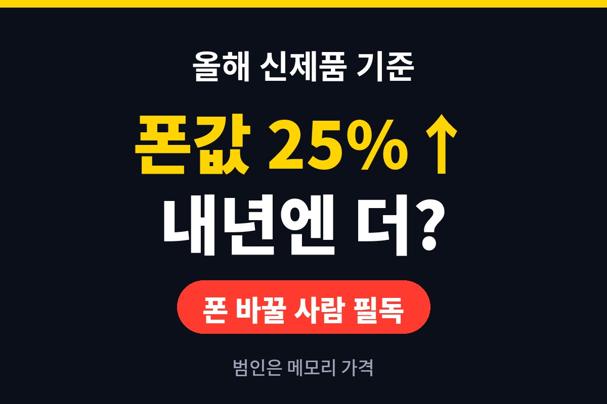
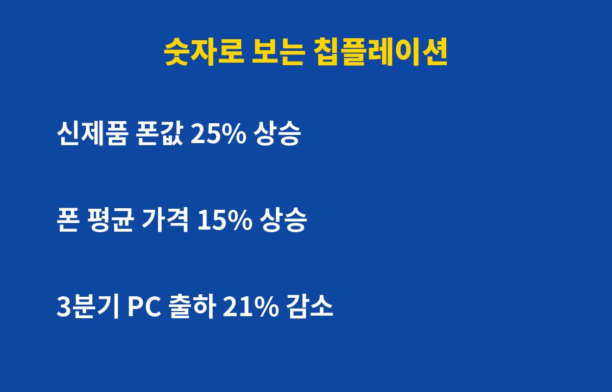
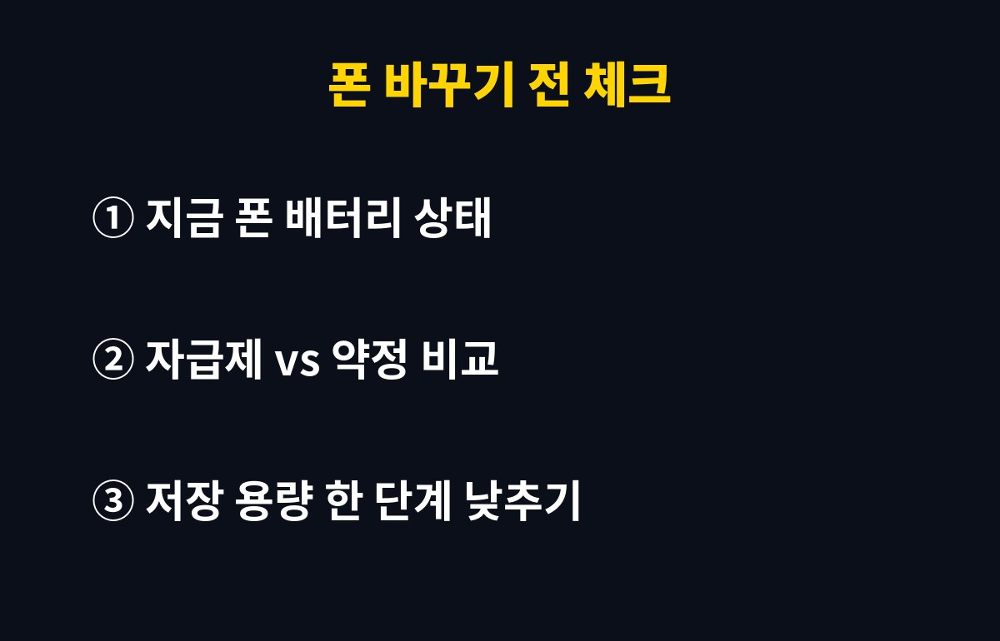

스마트폰 가격 인상, 기분 탓이 아니었어요. 올해 전 세계 스마트폰 신제품 가격이 25%, 전체 평균 가격도 15% 올랐다는 분석이 나왔거든요(KMJ, 10월 28일 보도).
폰 바꿀 생각이라면 궁금한 건 하나죠. "그럼 내년엔 내려가?" 안타깝게도 지금 흐름만 보면 반대쪽에 가깝습니다.
폰 안에는 램(RAM)과 저장공간 같은 메모리 반도체가 들어가요. 쉽게 말해 폰의 '책상'(램)과 '서랍'(저장공간)이죠. 이 부품값이 오르면 제조사 원가가 바로 뛰고, 그 부담이 출고가로 넘어옵니다.
문제는 AI 열풍이에요. 빅테크들이 AI 서버용 고성능 메모리(HBM)를 싹쓸이하면서 일반 메모리 공급까지 빡빡해졌거든요. 차세대 HBM4는 내년에 가격이 약 3배 오를 거라는 전망까지 나왔습니다. 폰에 들어가는 칩은 아니지만, 메모리 회사들이 생산 라인을 돈 되는 쪽으로 돌리면 우리 폰 메모리는 뒷전이 되는 거죠.

PC 쪽 숫자는 더 아찔해요. 올해 3분기 글로벌 PC 출하량은 약 5,700만 대로 1년 전보다 21% 줄었고, 시장조사업체 카운터포인트리서치는 4분기엔 27% 감소를 예상했습니다.
| 항목 | 수치 | 내 지갑 체감 |
|---|---|---|
| 스마트폰 신제품 가격 | 올해 25% 상승 | 100만 원 폰이 125만 원 느낌 |
| 스마트폰 평균 가격 | 올해 15% 상승 | 보급형도 예전 가격 아님 |
| 2026년 스마트폰 출하량 | 약 12% 감소 전망 | 물량 줄면 할인도 줄어듦 |
| 3분기 PC 출하량 | 21% 감소 | 노트북 세일 기대 낮춤 |
출하량이 줄었다는 건 비싸서 덜 산다는 뜻이기도 해요. 그런데 덜 팔리는데도 값이 안 내려간다? 그만큼 원가 압박이 세다는 신호입니다.
그 와중에 애플은 첫 폴더블폰 '아이폰 듀오'를 미국에서 1,999달러에 내놨어요. 그래도 사전예약이 몰려 일부는 배송일이 내년 1월 말까지 밀렸다고 하니, 비싸도 살 사람은 산다는 거죠. 국내에선 갤럭시 Z 폴드8, 갤럭시 S26 울트라가 맞상대로 꼽힙니다.
제조사 입장에선 "비싸게 팔아도 팔린다"는 확신이 생긴 셈이라, 가격을 낮출 이유가 별로 없어요. 소비자로선 좀 씁쓸한 대목이죠.

정답은 "지금 폰 상태"에 달려 있어요. 메모리값이 계속 오르면 추가 스마트폰 가격 인상으로 이어질 수 있다는 진단이 나온 만큼, 무작정 기다린다고 싸지는 판은 아닙니다.
배터리가 금방 닳고 업데이트 지원이 끝나 간다면 미루기보다 지금 조건 좋은 걸 잡는 게 낫고, 아직 쌩쌩하다면 배터리 교체 하나로 1년 더 버티는 것도 훌륭한 재테크예요. 저장 용량을 한 단계 낮추고 클라우드를 쓰는 것도 꽤 쏠쏠한 절약법입니다. 자급제와 통신사 약정 총액도 꼭 비교해 보세요.
여러분은 지금 폰, 몇 년째 쓰고 계세요? 스마트폰 가격 인상 소식 들으니 갑자기 정이 더 가지 않나요?
IT 가격·신제품 소식 놓치기 싫다면 구독해 두세요!
기사·공식 발표 기준이며 출시·가격 정보는 바뀔 수 있어요.